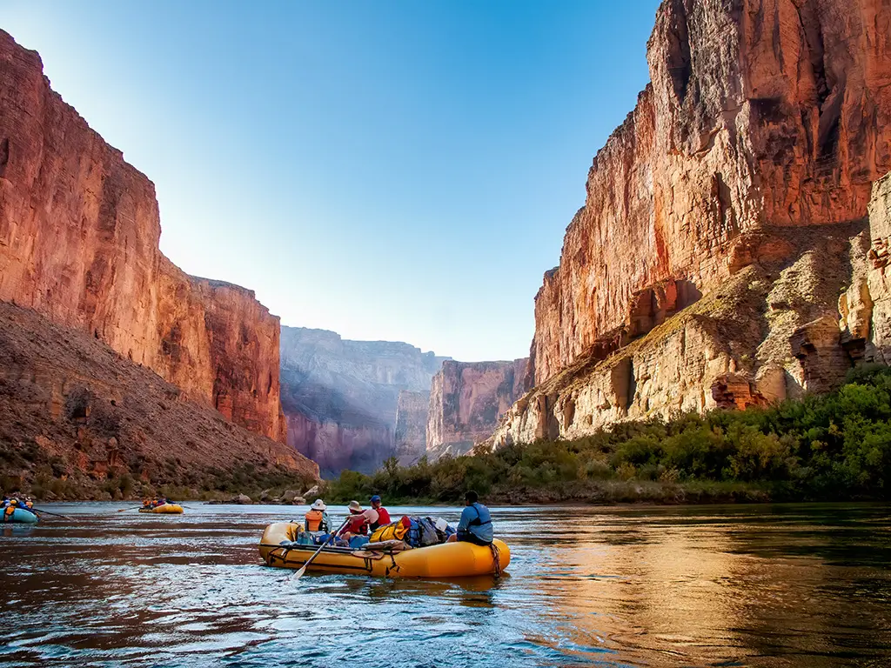
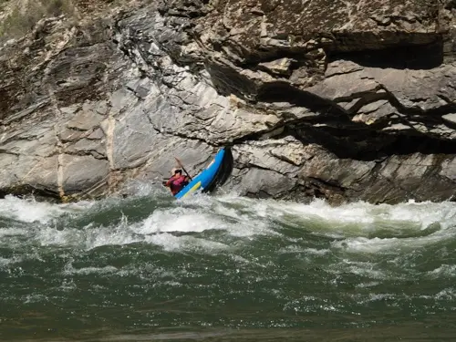
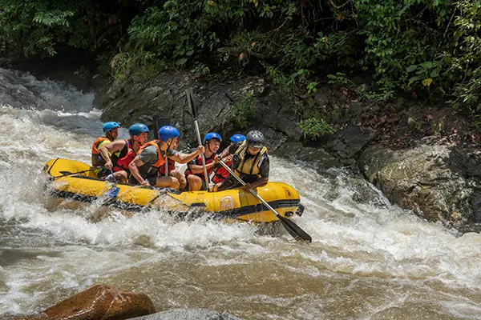

Experience the thrill of conquering rushing waters while creating unforgettable memories with friends and family. Our expert guides ensure your safety while delivering an adrenaline-pumping adventure you'll never forget.

Experience the thrill of conquering rushing waters while creating unforgettable memories with friends and family. Our expert guides ensure your safety while delivering an adrenaline-pumping adventure you'll never forget.
White Water Rafting Adventures was founded in 2010 with a passion for delivering exceptional outdoor experiences. What started as a small family operation has grown into a trusted leader in the rafting industry. For over a decade, we have been guiding adventurers of all skill levels through some of the most spectacular river systems in the region. Our commitment to safety, sustainability, and customer satisfaction has made us the preferred choice for rafting expeditions.



